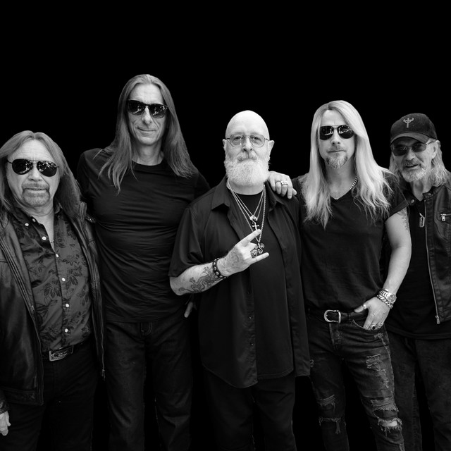

Pioneros del metal
Formada en 1969, Judas Priest es considerada una de las bandas fundacionales de la Nueva Ola del Heavy Metal Británico (NWOBHM). Su sonido de guitarras gemelas definió el género.
Nombre artístico: Judas Priest
Nombre real: Rob Halford, Ian Hill, Glenn Tipton, entre otros.
País: Reino Unido (Birmingham)
Género musical: Heavy Metal

Formada en 1969, Judas Priest es considerada una de las bandas fundacionales de la Nueva Ola del Heavy Metal Británico (NWOBHM). Su sonido de guitarras gemelas definió el género.
Fueron pioneros en introducir la estética de cuero, tachuelas y motocicletas en el heavy metal, una imagen que fue adoptada por miles de bandas y fans en todo el mundo.
Escucha un fragmento de su música:
Redes y Contacto:
Instagram: @judaspriest
Web oficial: www.judaspriest.com